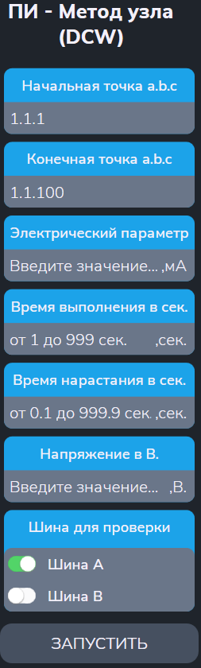

Тест ПИ методом узла
Тест позволяет проверить прочность изоляции коммутатора напряжением от 100 В до 700 В для переменного тока и до 1000В для постоянного тока методом полного узла.
Сначала появляется меню (см. рисунок 1):

Параметры
- "Начальная точка a.b.c" и "Конечная точка a.b.c" - начальный и конечный адреса диапазона проверяемых точек;
- "Электрический параметр" - задание порогового значения силы тока (в мА);
- "Время выполнения в сек" - времня выполнения (в сек);
- "Время нарастания в сек" - время нарастания до заданного напряжения (в сек).
- "Напряжение" - значение напряжения, которое должно быть выставлено на точки с помощью высоковольтной испытательной установки (в В);
- "Шина для проверки" — заданная шина («A» или «B») для подключения точек.
Алгоритм проверки
Подготовка:
- Установить режим высоковольтной испытательной установки;
- Подключить все проверяемые точки к альтернативной шине;
- Запустить высоковольтную испытательную установку и проверить прочность изоляции между шинами A1 и B1. При пробое выводится «Замыкание шин A1 и B1» и тест прерывается.
Для каждой проверяемой точки выполняются действия:
- Подключить текущую точку к заданной шине.
- Запустить высоковольтную испытательную установку и проверить прочность изоляции. При пробое выводится «АДРЕС Пробой».
- Подключить точку обратно к общей шине.